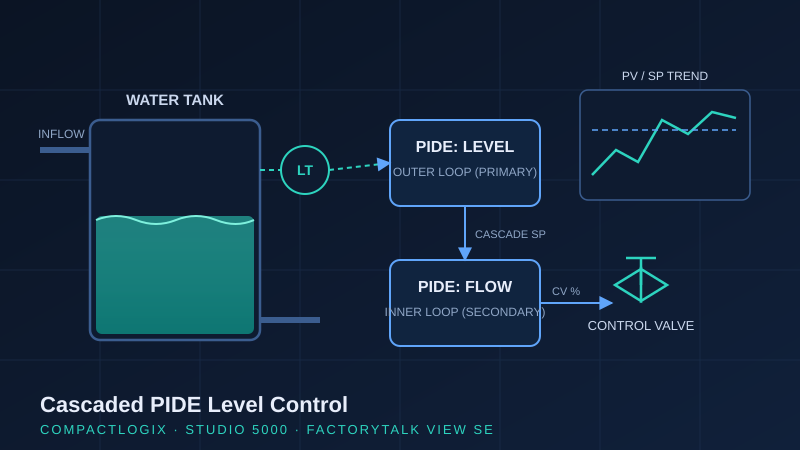

Project Case Study · Winter 2026
Cascaded PIDE Level Control System with FactoryTalk HMI
A two-loop cascade control system on Allen-Bradley CompactLogix that holds water tank level steady under variable inflow disturbances — paired with a FactoryTalk View SE operator interface built to industrial HMI and alarm-management conventions.

Why cascade control?
A single-loop level controller reacts to inflow disturbances only after they have already changed the tank level — by which point the process is off-setpoint. Cascade control fixes this by splitting the job in two: an outer (primary) loop controls tank level and continuously writes its output as the setpoint of an inner (secondary) loop that controls inlet flow. Because the inner flow loop is much faster than the level dynamics, it rejects flow disturbances before they ever reach the tank. This is the same strategy used on real process equipment — boiler drums, surge tanks, and feedwater systems.
Control design & PLC implementation
- PIDE function blocks in Studio 5000 for both loops, configured with engineering-unit scaling so operators see level in percent and flow in real units rather than raw counts.
- Anti-reset windup and output limiting configured on both loops, so the controller recovers cleanly when the valve saturates instead of overshooting.
- Bumpless auto/manual transfer — operators can take the loop to manual and hand it back to auto without bumping the process, exactly as expected in a plant environment.
- Cascade linking — the outer level PIDE writes its control variable to the inner flow PIDE setpoint, with correct initialization handling between the two blocks.
Loop tuning & validation
Both loops were tuned inner-loop-first using the CompactLogix built-in autotuner, then validated against step-response targets: the inner flow loop tuned fast and tight, the outer level loop tuned slower to avoid fighting it. Performance was confirmed by stepping the level setpoint and by introducing inflow disturbances, verifying the cascade rejected disturbances faster and with less deviation than a single-loop configuration.
FactoryTalk View SE operator interface
- Animated tank graphic with live level indication and valve position.
- Real-time PV / SP / CV trend displays for both loops, so tuning behaviour is visible at a glance.
- Operator setpoint entry, start/stop controls, and auto/manual mode selection.
- An ISA-18.2-style tiered alarm banner — alarms prioritized and annunciated by severity rather than a flat alarm list, following alarm-management good practice.
What this demonstrates
End-to-end loop ownership on the industry-standard Rockwell platform: control strategy selection, PIDE configuration, tuning methodology, and an operator HMI built to real industrial conventions — not just a lab exercise that lights an indicator.